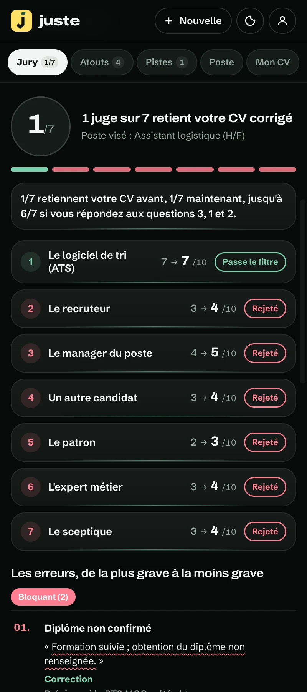
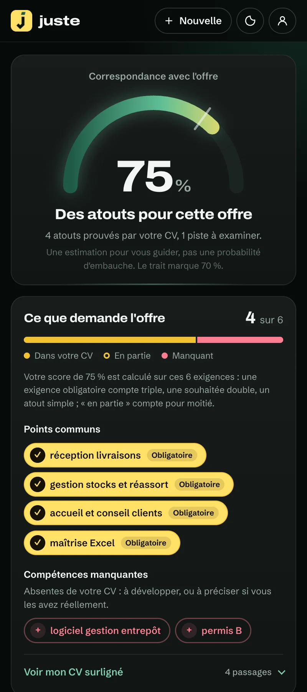
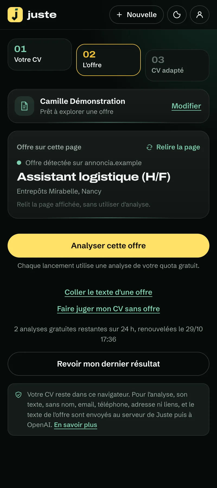
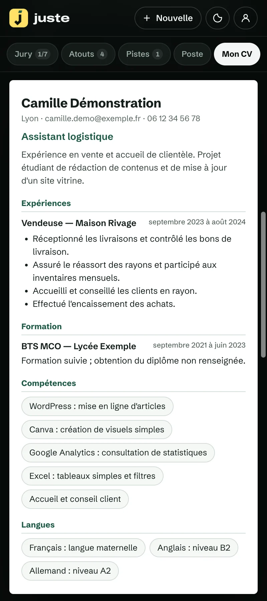
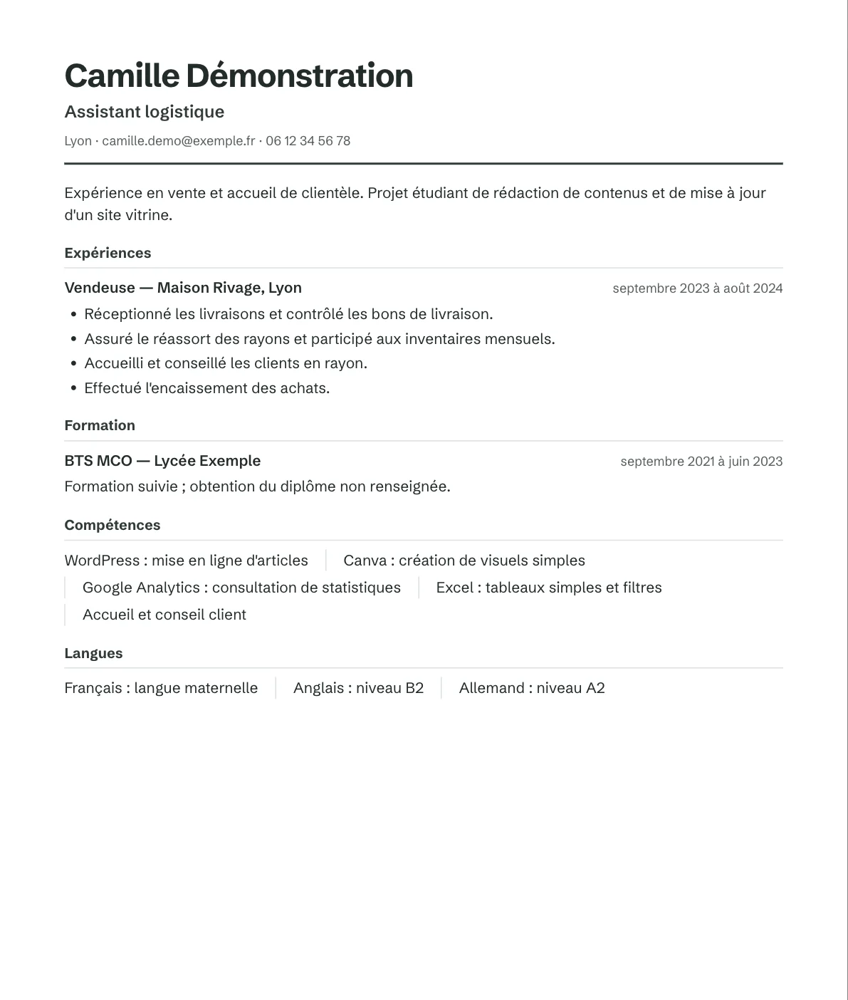
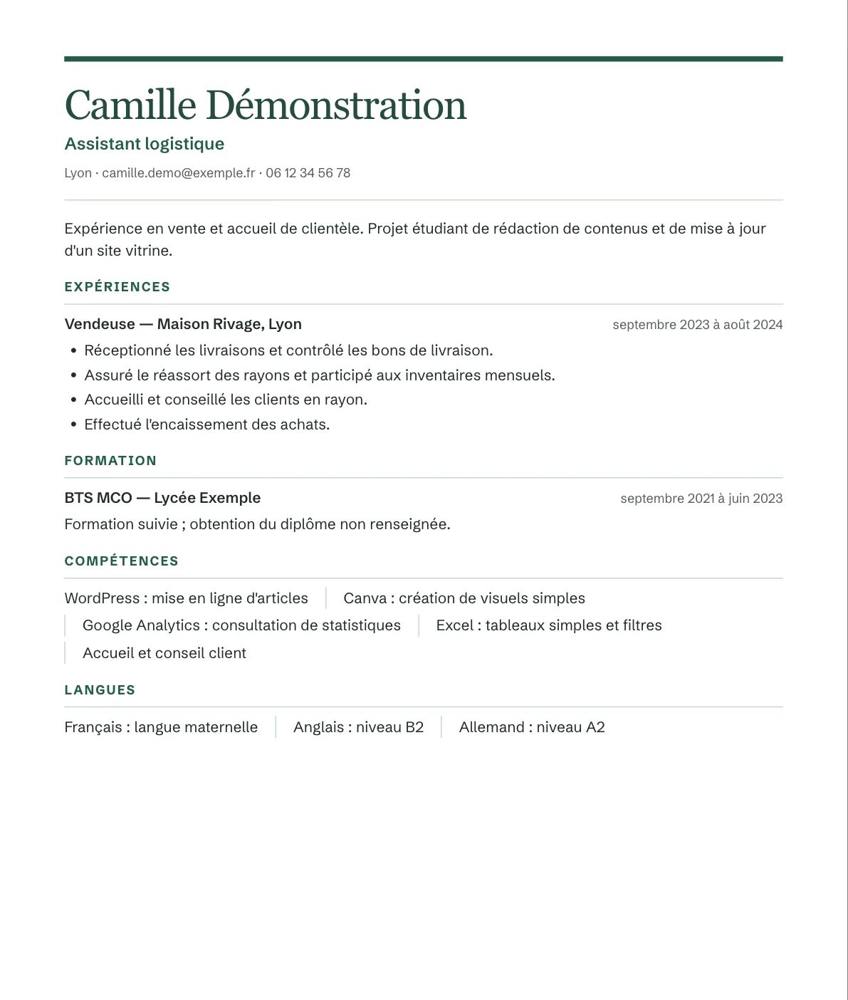
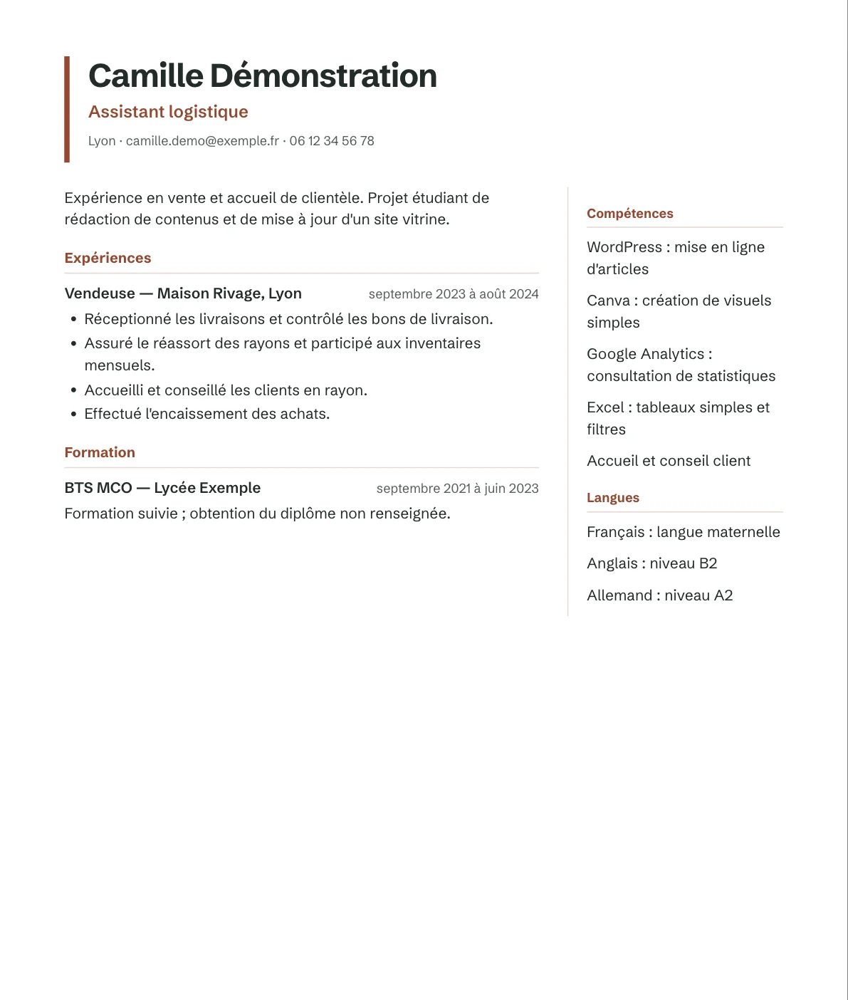

Enregistré dans votre navigateur
Votre CV et vos résultats ne sont pas stockés sur un compte en ligne.
Comprenez ce que recherche l’entreprise, repérez vos atouts et préparez une version de votre CV à relire. Sans rien inventer.


Choisissez une offre. Explorez les atouts, les pistes et la proposition de CV. Ici, tout se découvre en quelques clics.
Atelier Rivage · Lyon
CDI · Débutant acceptéParticiper aux inventaires, au réassort et à la réception des livraisons.
Votre analyse s’ouvre ici, à côté de l’offreVotre expérience en magasin est un bon point de départ.
Exemple fictif · score illustratif, sans prédiction d’embauche
Sur un autre site, collez simplement le texte de l’annonce dans le panneau.
Captures réelles du panneau, sur un CV et une offre fictifs. Le panneau s’ouvre à droite de l’annonce, sans modifier la page.


Un assistant IA généraliste peut aider à rédiger. Juste est fait pour une seule chose : adapter votre vrai CV à l’offre que vous lisez.
Une mission de stage. Un projet étudiant. Une expérience en magasin. Votre parcours contient déjà des acquis. Juste vous aide à faire le lien avec les attentes d’une offre et à les présenter avec justesse.
Voir ce qui changeRéassort des rayons, inventaires et réception des livraisons.
Exemple fictif · à relire avant envoiPour une offre en logistique, vos missions de réception et d’inventaire prennent une autre place. La reformulation s’appuie sur les informations que vous avez fournies.
Une mission réelle, telle qu’elle figure dans le CV.
Des atouts accompagnés d’un extrait du CV.
Des pistes reliées aux attentes de l’offre.
Une proposition que vous pouvez relire et modifier.
Lyon · Vente et accueil
Accueil et conseil des clients.
Réassort et inventaires mensuels.
Atelier Rivage · Lyon
Accueillir les clients.
Comprendre leurs besoins.
Les accompagner dans leurs achats.
Les mêmes faits, une autre présentation.
Accueil et conseil des clients en rayon.
Encaissement et réassort.
Aucun compte à créer, aucune carte bancaire. Si vous bloquez, écrivez-nous à contact@justecv.fr : on vous aide.
Cliquez sur « Rejoindre la bêta gratuite », puis sur le bouton bleu « Ajouter à Chrome ».
Un fichier PDF ou Word, une photo de votre CV, ou simplement son texte. Il reste enregistré sur votre ordinateur.
L’icône jaune de Juste, en haut à droite de Chrome, ouvre votre analyse à côté de l’annonce. Sur un autre site, collez le texte de l’offre.
L’appli Juste s’ouvre dans le navigateur de votre téléphone, sans rien installer depuis un magasin d’applications. Ajoutez votre CV, puis collez le texte d’une offre (sur iPhone, vous pouvez aussi la partager avec le raccourci Juste) : vous obtenez la même analyse. Votre CV reste enregistré sur votre téléphone.
Ouvrir l’appli sur mon téléphoneTrois présentations à choisir dans l’extension avant l’export PDF. Ci-dessous, de vrais exports d’un CV fictif.

La clarté, simplement.

Une élégance tranquille.

Un nouvel équilibre.
Un score devient utile quand vous savez quoi faire ensuite.
Explorer les pistesExpliquez comment vous avez utilisé un outil ou mené un projet. Un exemple réel rend votre expérience plus lisible.
Une mission de stage ou un engagement peut répondre à l’offre. Décrivez ce que vous avez réellement fait.
Une compétence absente peut devenir une piste d’apprentissage. Ajoutez-la à votre CV une fois acquise.
Ce qui est envoyé, à qui, et combien de temps : tout est écrit noir sur blanc.
Votre CV et vos résultats ne sont pas stockés sur un compte en ligne.
Avant chaque analyse, votre nom, votre email, votre téléphone, votre adresse et vos liens sont retirés du texte envoyé.
Le serveur de Juste ne garde pas le texte de votre CV : la suite d’une analyse reste 30 minutes en mémoire, jamais sur disque.
« Effacer mon CV » ou « Tout effacer », depuis le panneau. Ni publicité, ni mouchard.
Pendant la bêta, Juste est entièrement gratuit. Premium et le Pass recherche ouvriront plus tard ; leurs prix sont annoncés dès maintenant.
0 €sans carte bancaire
7,99 €TTC par mois, prévu
Pas encore disponible : aucun paiement n’est possible pendant la bêta.
TVA non applicable, art. 293 B du CGI. Prix, renouvellement et résiliation rappelés dans l’extension avant tout paiement.
19,99 €TTC pour 3 mois, prévu
Pas encore disponible : aucun paiement n’est possible pendant la bêta.
TVA non applicable, art. 293 B du CGI.
Bêta gratuite : aucun abonnement ne démarre depuis cette page ni depuis l’extension.
Juste est gratuit pendant la bêta. Faites-le tester à celles et ceux que vous accompagnez, et dites-nous ce qui les aiderait vraiment.
Vos stages, projets, jobs étudiants et engagements comptent. Décrivez-les avec précision : l’outil travaille avec ce que vous fournissez. Un modèle vide doit être complété avant l’analyse.
PDF, DOCX, TXT, Markdown et images JPG, PNG, WebP ou BMP. Les images et PDF scannés sont lus sur votre ordinateur. Vérifiez toujours le texte extrait, les dates et les niveaux de langues.
Il estime la correspondance entre le texte de votre CV et celui d’une offre. Il ne prédit pas une décision de recrutement ou le résultat d’un logiciel de recrutement.
Non. Ce qui manque dans votre CV reste marqué « à compléter », et l’export PDF est bloqué tant que ces emplacements ne sont pas remplacés par vos vraies informations ou supprimés.
Votre CV reste enregistré dans votre navigateur. Pour une analyse, le texte du CV et celui de l’offre sont envoyés au serveur de Juste puis à OpenAI, après retrait du nom, de l’email, du téléphone, de l’adresse et des liens reconnus. Vous pouvez tout effacer depuis le panneau. Consultez notre politique de confidentialité.
Non. Vous consultez les propositions, les relisez et exportez votre document. Vous choisissez vous-même où et quand candidater.
Pendant la bêta, l’extension est diffusée par un lien du Chrome Web Store. Le bouton « Rejoindre la bêta » y mène dès qu’elle est publiée. En attendant, la démonstration de cette page peut déjà être explorée.
Bêta gratuite, 3 analyses par semaine.